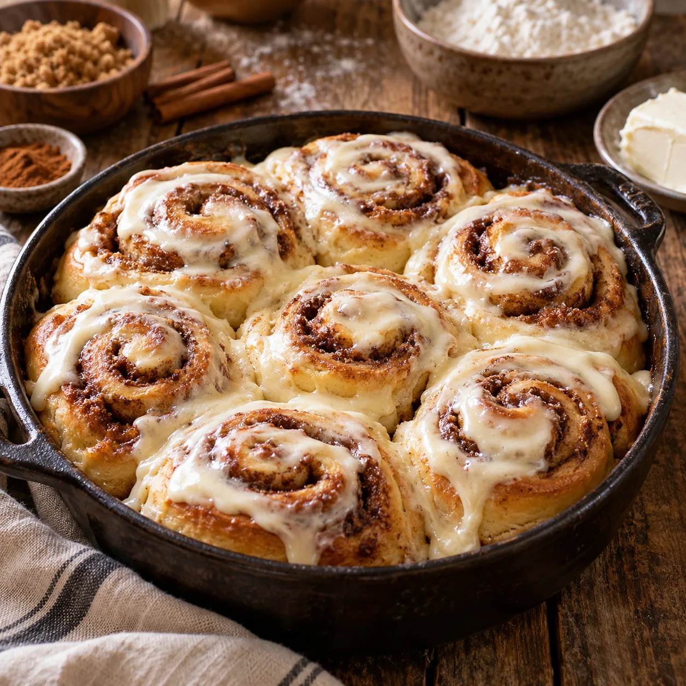
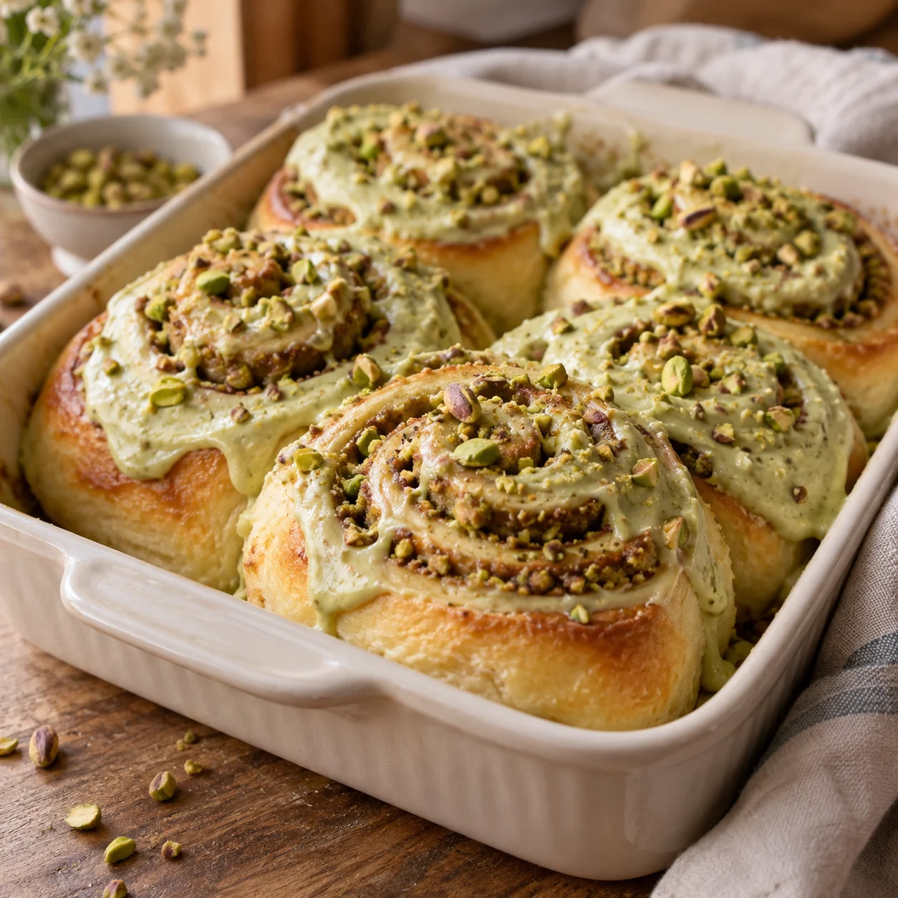

Was Süßes geht immer
Zimtschnecken

Ein fluffiger Hefeteig und gleich zwei Möglichkeiten: Bereite die Schnecken klassisch mit Zimt oder als Pistazienvariante zu und wähle anschließend das passende Frosting. Füllungen und Frostings können nach Lust und Laune kombiniert werden.
Grundteig
Schritt 2 · Füllung auswählen
Zwei Füllungen
Bereite eine der beiden Füllungen zu und verstreiche sie später auf dem ausgerollten Grundteig.
Klassische Zimtfüllung
- 120 g sehr weiche Butter
- 200 g brauner Zucker
- 2–3 TL Zimt, am besten Ceylon-Zimt
Butter, braunen Zucker und Zimt zu einer gleichmäßigen, streichfähigen Creme verrühren.

Pistazienfüllung
- 80 g Pistaziencreme
- Etwas sehr weiche Butter
- 3 EL brauner Zucker
- 1 EL Zimt
Alle Zutaten gründlich zu einer glatten, streichfähigen Pistaziencreme verrühren.
Schritt 3 · Frosting auswählen
Zwei Frostings
Das gewählte Frosting wird nach dem Backen auf den noch warmen Schnecken verteilt.
Klassisches Frischkäsefrosting
- 50 g weiche Butter
- 60 g Puderzucker
- 200 g Frischkäse
Butter, Puderzucker und Frischkäse glatt und cremig verrühren.
Pistazienfrosting
- 100 g Pistaziencreme
- 100 g Frischkäse
- 1 Prise Salz
- 60 g Puderzucker
Pistaziencreme, Frischkäse, Salz und Puderzucker zu einem glatten Frosting verrühren.
Zubereitung
- Die lauwarme Milch mit der frischen Hefe verrühren und einige Minuten stehen lassen.
- Weißmehl, Salz, Zucker, Vanillinzucker, Ei und zimmerwarme Butter in eine große Schüssel geben. Die Hefemilch dazugießen und alles etwa 10 Minuten gründlich verkneten. Der Teig ist anfangs klebrig, wird durch das lange Kneten aber glatt und elastisch.
- Den Teig zu einer Kugel formen, zurück in die Schüssel legen und mit einem angefeuchteten Tuch abdecken. An einem warmen Ort gehen lassen, bis sich sein Volumen ungefähr verdoppelt hat.
- Die gewünschte Füllung nach der entsprechenden Karte zubereiten. Den aufgegangenen Teig kurz durchkneten und auf einer leicht bemehlten Fläche zu einem Rechteck ausrollen. Die Füllung gleichmäßig darauf verstreichen.
- Den Teig von der langen Seite her eng aufrollen und in gleich große Schnecken schneiden. Eine Backform einfetten und die Schnecken mit etwas Abstand hineinsetzen. Die Sahne gleichmäßig darüber verteilen.
- Den Backofen auf 200 °C Ober-/Unterhitze vorheizen. Die Schnecken direkt backen oder für ein besonders fluffiges Ergebnis vorher noch einmal etwa 20–30 Minuten abgedeckt gehen lassen.
- Die Schnecken etwa 25–30 Minuten goldbraun backen.
- Das gewünschte Frosting nach der entsprechenden Karte zubereiten, auf den noch warmen Schnecken verteilen und leicht anschmelzen lassen.
Tipp
Beim Kneten nicht vorschnell zusätzliches Mehl einarbeiten. Der anfangs klebrige Teig entwickelt erst durch langes Kneten sein stabiles Glutengerüst und wird dadurch besonders weich und fluffig.